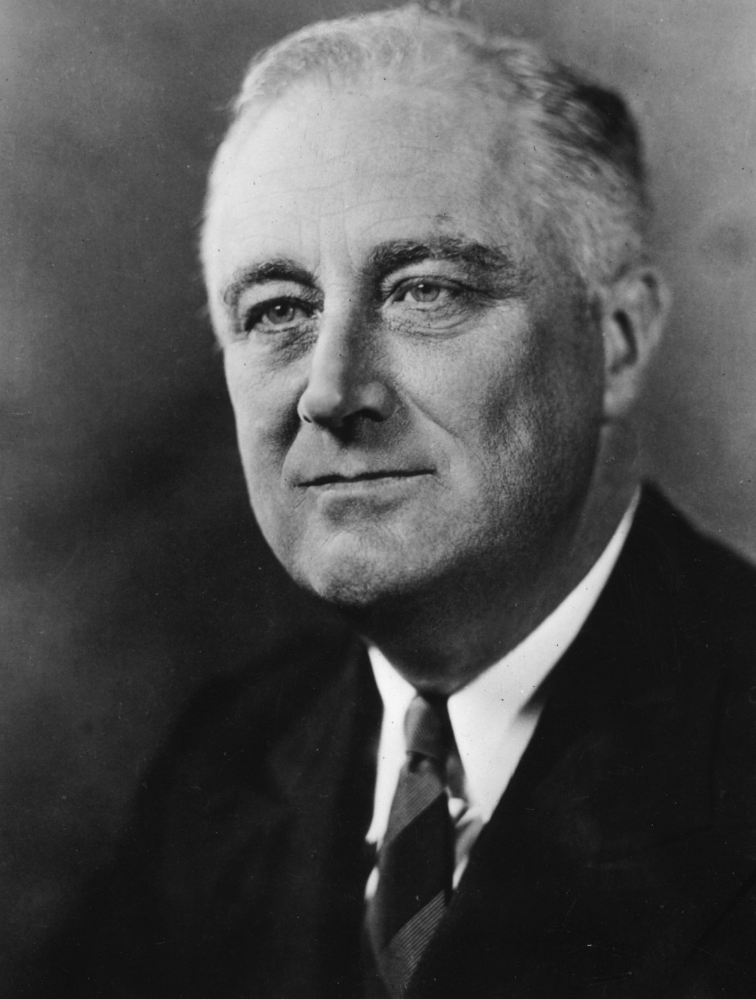

Président des États‑Unis – 1933‑1945

Franklin Delano Roosevelt (1882‑1945), 32ᵉ président des États‑Unis, est l’une des figures politiques majeures du XXᵉ siècle. Dirigeant le pays durant la Grande Dépression puis pendant la Seconde Guerre mondiale, il incarne un leadership résilient malgré sa paralysie due à la polio.
Roosevelt soutient les Alliés dès 1940 via le programme Lend‑Lease, transformant les États‑Unis en « arsenal des démocraties ». Après Pearl Harbor en 1941, il engage pleinement le pays dans le conflit. Il coordonne l’effort industriel, collabore étroitement avec Churchill et Staline, et participe aux conférences stratégiques de Téhéran et de Yalta.
Roosevelt est considéré comme l’un des dirigeants les plus influents de l’histoire américaine. Son action diplomatique, économique et militaire a profondément façonné l’issue de la guerre et l’ordre mondial de l’après‑guerre.